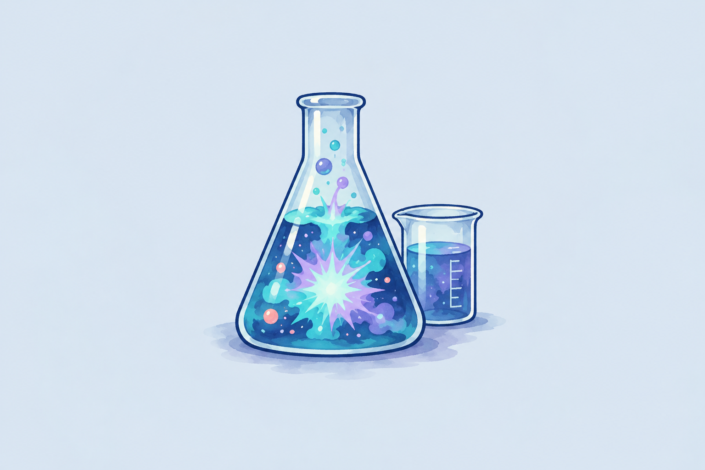
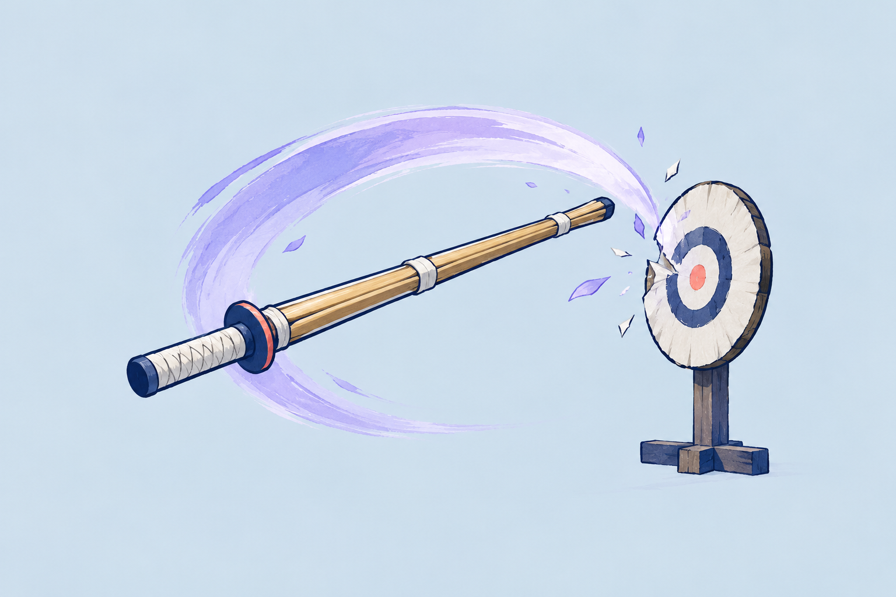
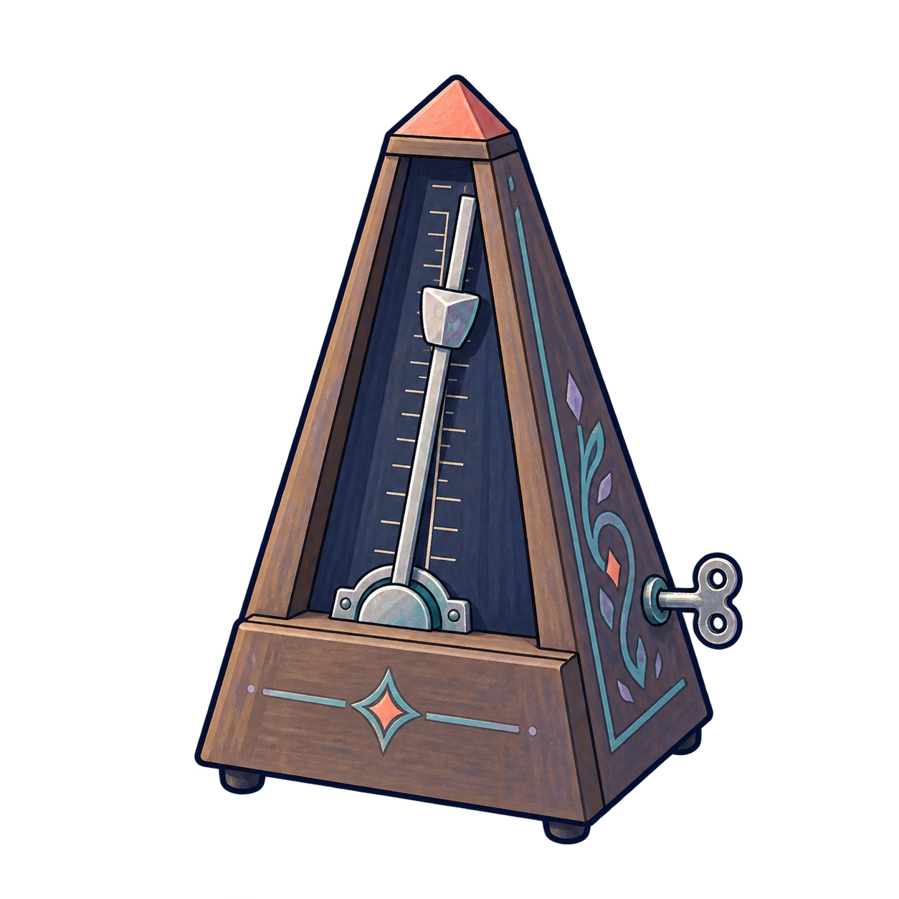
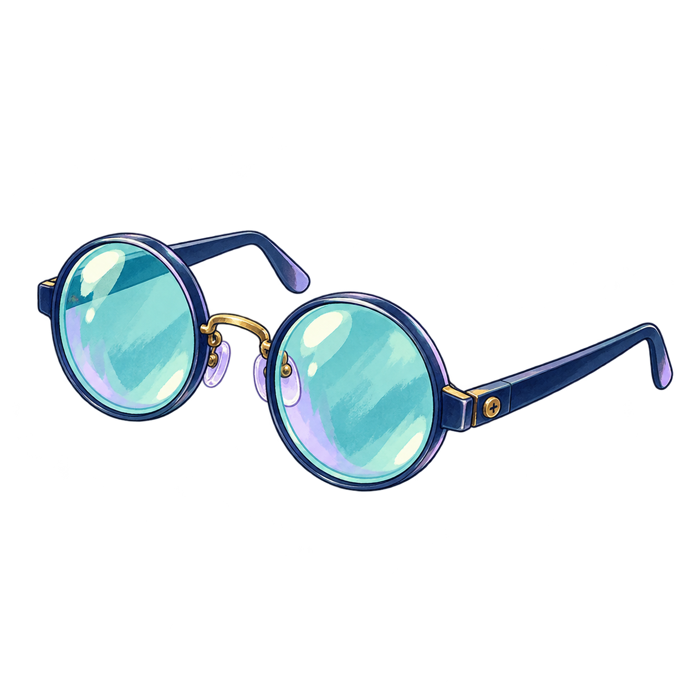
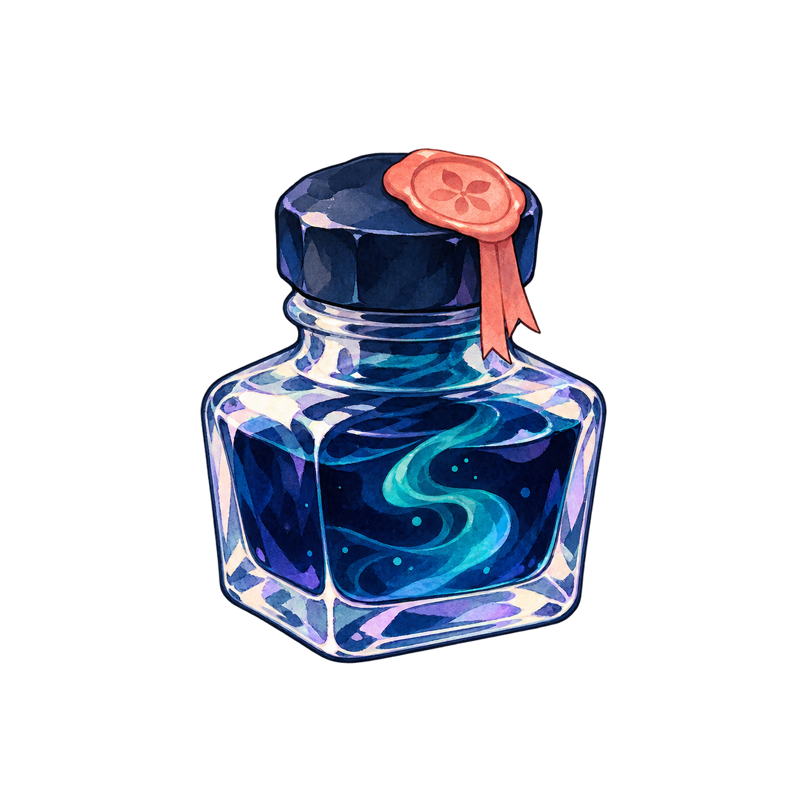

<!doctype html>
<html lang="ja"><meta charset="utf-8"><meta name="viewport" content="width=device-width,initial-scale=1">
<title>#246 card art and rarity proposals</title>
<style>
*{box-sizing:border-box}html,body{margin:0;min-height:100%;font-family:system-ui,-apple-system,"Hiragino Kaku Gothic ProN",sans-serif;color:#d9e6ed;background:#142131}.board{width:100vw;height:100vh;min-height:650px;padding:24px 34px;background:radial-gradient(ellipse at 55% 25%,#29394a 0,#172838 65%,#122030 100%);display:flex;flex-direction:column;gap:18px}.head{display:flex;align-items:center;justify-content:space-between;border-bottom:1px solid #6b829766;padding-bottom:12px}.eyebrow{font-size:11px;letter-spacing:.18em;color:#9eb5bd}.head h1{font-size:24px;margin:4px 0 0;font-weight:700}.note{font-size:12px;color:#aec1c9;max-width:450px;line-height:1.55}.cards{flex:1;display:flex;gap:clamp(16px,2.5vw,38px);justify-content:center;align-items:center}.card{--trim:#93a6b0;--paper:#f4f3ed;width:clamp(205px,22vw,254px);height:clamp(370px,54vh,478px);min-height:360px;position:relative;flex:none;background:var(--paper);border:4px solid var(--trim);box-shadow:0 16px 28px #0006,0 0 0 2px #0d1724;color:#1b3044;padding:6px;clip-path:polygon(0 0,100% 0,100% 100%,0 100%)}.card.c{clip-path:polygon(0 14px,14px 0,100% 0,100% 100%,0 100%)}.card.u{--trim:#77a9a4;border-width:5px;border-radius:15px 15px 4px 4px}.card.r{--trim:#aa9cbd;border-width:6px;border-radius:5px}.card.u:before{content:"";position:absolute;top:6px;left:19px;right:19px;border-top:2px solid #347b76}.card.r:before{content:"◆";position:absolute;top:-2px;left:calc(50% - 13px);z-index:2;font-size:23px;color:#584f77;text-shadow:0 1px #fff;background:#ece9f1;line-height:22px;padding:0 3px}.inner{height:100%;border:1px solid #71829388;display:flex;flex-direction:column;background:#f7f6f0}.r .inner{border:1px solid #5e557d}.top{padding:10px 10px 8px;display:flex;align-items:center;justify-content:space-between;gap:5px;min-height:66px}.word{font-size:clamp(18px,2vw,27px);font-weight:760;line-height:1.05;letter-spacing:.01em}.club{font-size:10px;color:#4b6174;margin-top:4px}.kind{border:2px solid #9b555e;color:#8c3e52;min-width:42px;height:30px;display:grid;place-items:center;border-radius:4px;outline:1px solid #9b555e;outline-offset:2px;font-size:10px;font-weight:800}.rarity{height:25px;display:flex;align-items:center;gap:6px;padding:0 10px;border-top:1px solid #b5c3c6;border-bottom:1px solid #b5c3c6;font-size:10px;font-weight:800;letter-spacing:.09em}.rarity .shape{font-size:15px;line-height:1}.c .rarity{background:#e5e9e7}.u .rarity{background:#e0eeeb}.r .rarity{background:#eae6f0}.art{height:43%;margin:6px 6px 0;overflow:hidden;background:#dfebed;border:1px solid #9daeb3}.art img{width:100%;height:100%;object-fit:cover;object-position:center}.effect{padding:12px 12px 4px;font-size:14px;font-weight:650;line-height:1.48;flex:1}.effect strong{font-size:23px}.foot{border-top:1px solid #aabac0;margin:0 9px;padding:8px 0 10px;font-size:11px;color:#526777;display:flex;justify-content:space-between}.items{height:125px;flex:none;display:flex;gap:15px;align-items:center;justify-content:center;border-top:1px solid #6b829766;padding-top:12px}.item{height:100%;width:220px;display:flex;align-items:center;gap:12px}.item img{width:73px;height:73px;object-fit:contain;background:#d4e0e8;border:2px solid #627889;border-radius:12px}.item.potion img{border-radius:50%;border-style:dashed}.item b{font-size:13px}.item span{display:block;font-size:10px;color:#a3bac5;margin-top:3px}.mode{font-size:11px;color:#acc4d0;max-width:200px}.quiet{filter:saturate(.55) contrast(.97)}.quiet *{animation:none!important;transition:none!important}.gray{filter:grayscale(1)}@media(max-width:1080px){.board{padding:18px 20px;gap:10px}.head h1{font-size:20px}.note{max-width:350px;font-size:11px}.cards{gap:14px}.card{width:202px;height:360px}.effect{font-size:12px;padding:8px}.effect strong{font-size:19px}.items{height:105px}.item{width:170px}.item img{width:62px;height:62px}.mode{max-width:150px}}
</style>
<main class="board" id="board"><header class="head"><div><div class="eyebrow">ISSUE 246 · VISUAL EXPLORATION</div><h1>カード絵とレアリティの視覚案</h1></div><div class="note">3段階は仕様未決定の比較案です。色・枠形・短いラベルで見分けます。絵は候補であり、正式なカード素材ではありません。</div></header><section class="cards">
<article class="card c"><div class="inner"><div class="top"><div><div class="word">jot</div><div class="club">文芸部 · LIT-001</div></div><div class="kind">攻撃</div></div><div class="rarity"><span class="shape">◩</span> C / COMMON 案</div><div class="art"></div><div class="effect"><strong>4</strong> ダメージ<br>カードを 1 枚引く</div><div class="foot"><span>対象：敵1体</span><span>入力 jot</span></div></div></article>
<article class="card u"><div class="inner"><div class="top"><div><div class="word">reaction</div><div class="club">科学部 · SCI-003</div></div><div class="kind">攻撃</div></div><div class="rarity"><span class="shape">◉</span> U / UNCOMMON 案</div><div class="art"></div><div class="effect"><strong>6</strong> ダメージ<br>毒なら <strong>12</strong></div><div class="foot"><span>対象：敵1体</span><span>入力 reaction</span></div></div></article>
<article class="card r"><div class="inner"><div class="top"><div><div class="word">final cut</div><div class="club">剣道部 · KEN-006</div></div><div class="kind">攻撃</div></div><div class="rarity"><span class="shape">◆</span> R / RARE 案</div><div class="art"></div><div class="effect"><strong>8</strong> ダメージ<br>敵 HP 半分以下で <strong>16</strong></div><div class="foot"><span>対象：敵1体</span><span>入力 final cut</span></div></div></article>
</section><footer class="items"><div class="item"><div><b>部室のメトロノーム</b><span>レリック候補</span></div></div><div class="item"><div><b>観察眼鏡</b><span>レリック候補</span></div></div><div class="item potion"><div><b>インクの小瓶</b><span>ポーション候補 · 使用可能</span></div></div><div class="mode" id="mode">1024 / 1440 表示比較<br>画像は未採用候補</div></footer></main>
<script>const qs=new URLSearchParams(location.search);if(qs.has('gray'))document.getElementById('board').classList.add('gray');if(qs.has('quiet'))document.getElementById('board').classList.add('quiet');</script></html>
